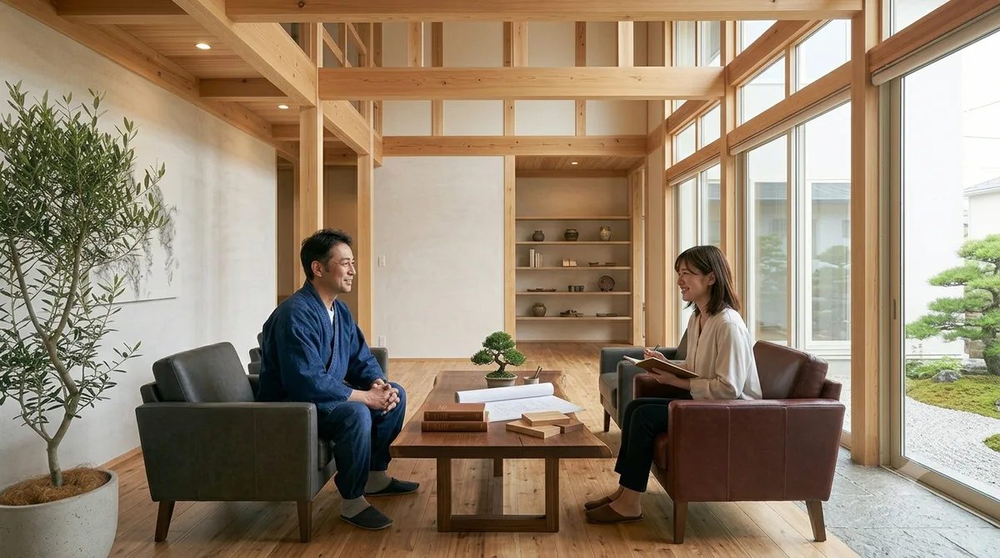
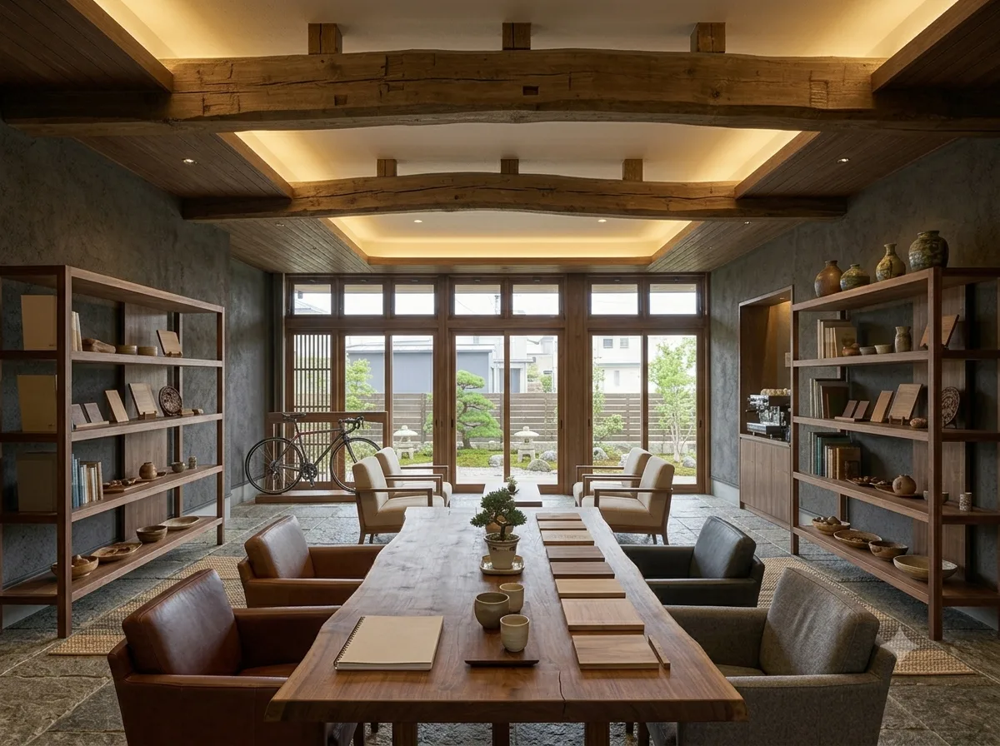
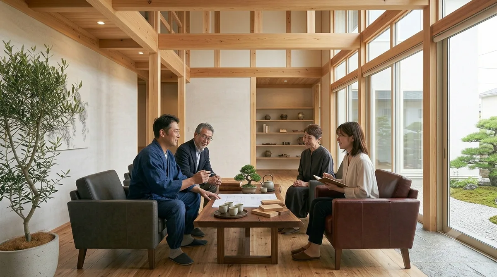
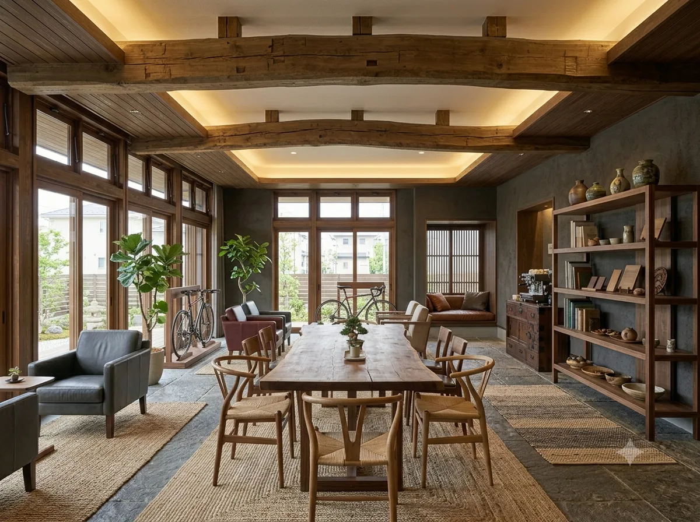
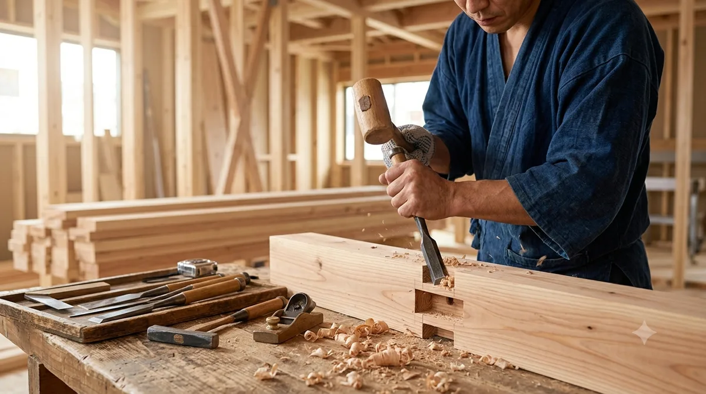
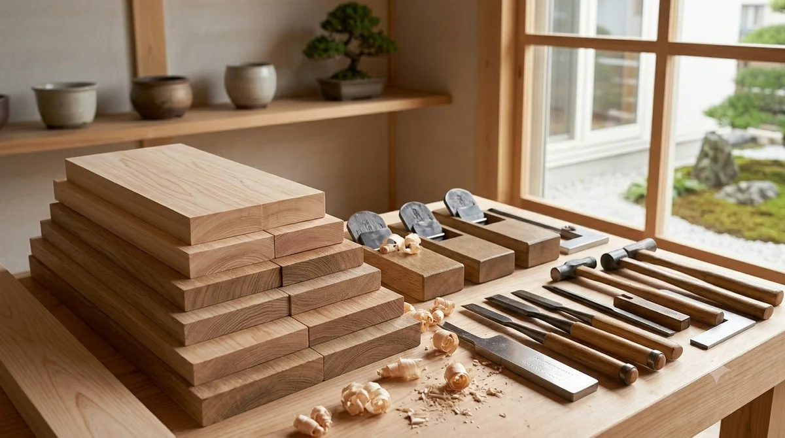

W-01
モダン住宅
注文住宅片流れの屋根に、木と黒の外壁を合わせた外観です。道路側は開口を絞り、庭側に大きな窓を寄せて光を取り込んでいます。駐車と玄関までの動線は、雨の日を想定して短くまとめました。

これはRESCが作成したサンプルサイトです。実店舗ではありません。
RESCのサイトに戻る注文住宅4件と、リノベーション・店舗の2件。同じ図面が二度と使えないのは、敷地の条件も暮らし方も一軒ずつ違うからです。外観と内観、それぞれの写真でご覧ください。
PLATE INDEXW-01 — W-06
片流れの屋根に、木と黒の外壁を合わせた外観です。道路側は開口を絞り、庭側に大きな窓を寄せて光を取り込んでいます。駐車と玄関までの動線は、雨の日を想定して短くまとめました。

柱と梁を現した居間です。座ったときの目線の高さで、庭がいちばんきれいに見える位置に窓を取りました。木の面が見えるぶん、年数が経ってどう色が変わるかまで考えて材を選んでいます。

軒を深く出した平屋です。夏の高い日差しは軒で切り、冬の低い光は室内の奥まで入ります。前庭は石と植栽でつくり、道路からの視線をやわらげました。段差が少ないぶん、住みはじめてからの移動も楽になります。

玄関を二つ設けた二世帯の住まいです。生活の時間帯が違っても気配は届くように、水まわりと階段の位置を調整しました。将来、使い方が変わったときに手を入れやすい壁の配置にしています。

既存の梁と柱を現して活かした改修です。傷んでいる箇所は差し替え、使える材はそのまま残しました。解体してみないと分からない部分もあるので、開けた段階でご相談しながら進めます。

木の什器と間接照明でまとめた内装です。人の動きに合わせて棚の高さと照明の位置を決めました。住宅と同じで、使う人がどう動くかを先にうかがってから図面を引いています。
